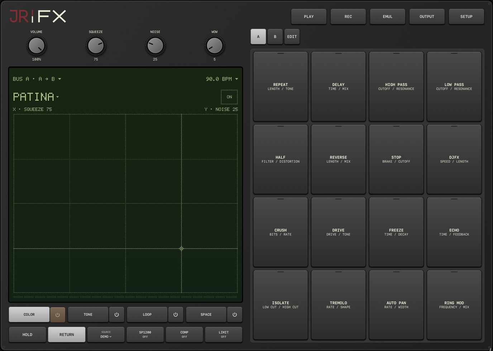
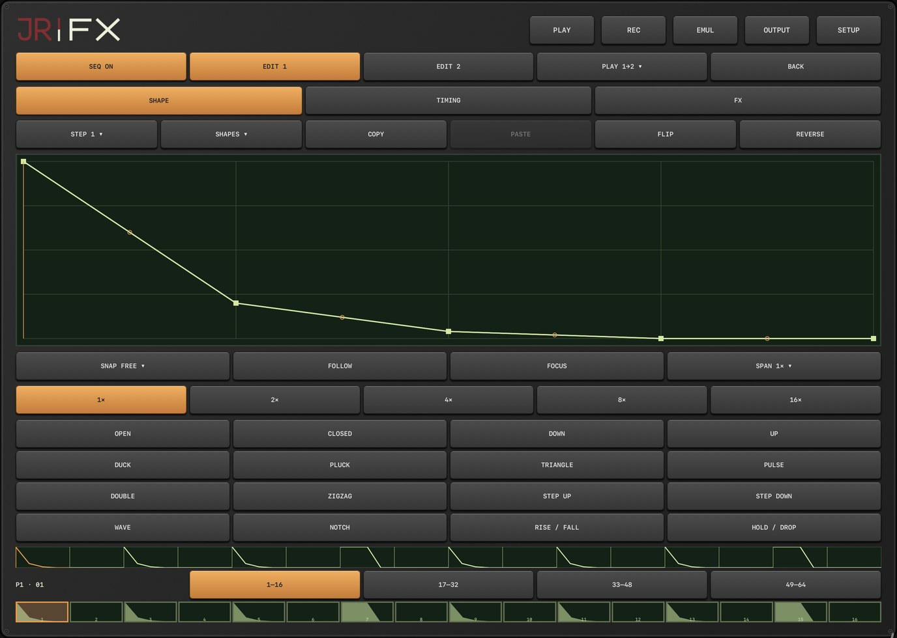
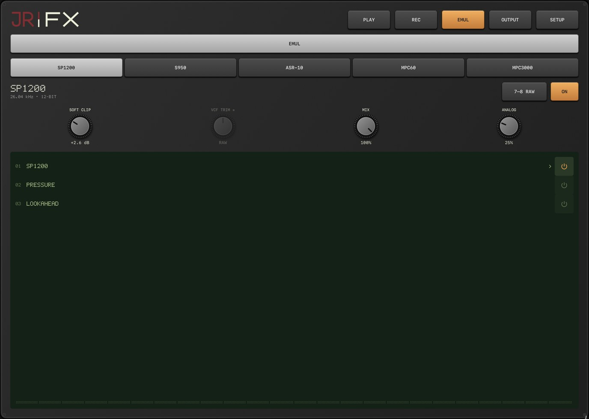
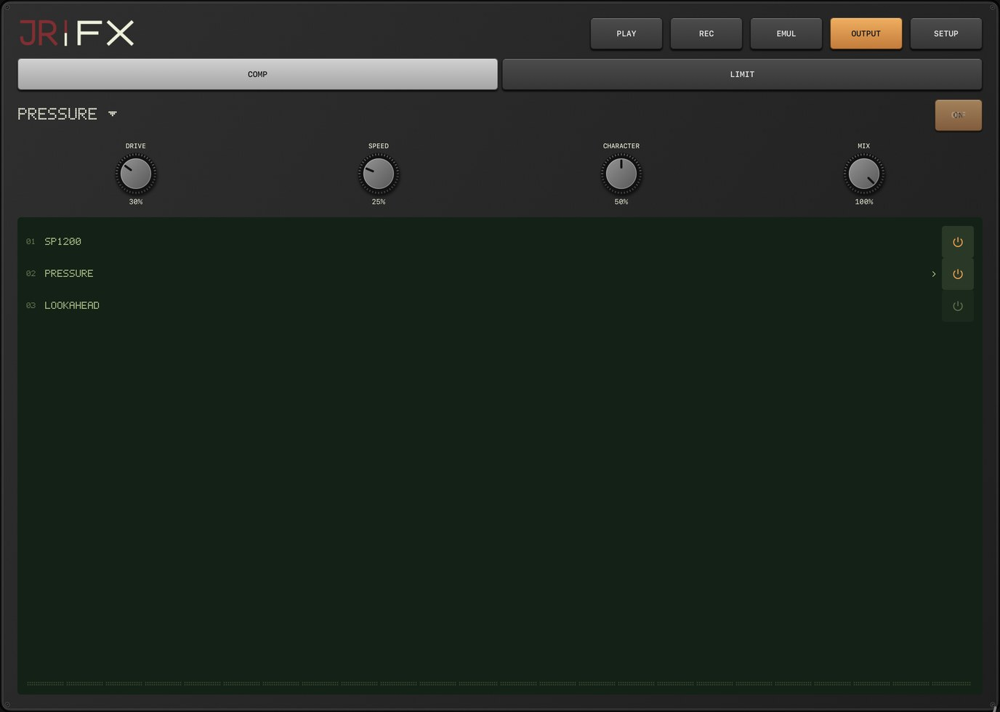

Make it feel different.
PATINA compression, noise and wow. Tape, console, tube, drive and other ways to shape the texture.
PERFORMANCE EFFECTS / iPHONE · iPAD · AUv3
A hands-on effects box for iPhone and iPad. Add color, reshape a loop, play the XY pads, and record the performance.
APP STORE LAUNCH IN PREPARATION · RELEASE DATE TO BE ANNOUNCED

ACTUAL APP SCREEN / MODERN BK
THE WORKFLOW
A focused instrument surface, with room for the details when you need them. Modern and JR skins share the same controls and sound.
PATINA compression, noise and wow. Tape, console, tube, drive and other ways to shape the texture.
Three-band ISOLATOR, low/high/band-pass filters, ladders, wah, EQ and moving resonances.
DJFX LOOP, beat repeat, half-time, reverse, tape stop and more. Touch the sound with editable XY pads.
Delay, echo, dub, ping-pong and reverb. Go from a subtle repeat to a live feedback gesture.
Shape filters, volume, pan, drive or crush across two patterns, with up to 64 steps per pattern.
Five sampler-inspired models followed by optional compression and limiting. All stages can be bypassed.
A CLOSER LOOK
Swipe or scroll through actual iPad screens. Tap an image to inspect it.



CHOOSE YOUR SURFACE
Open SETUP → INFO → SKIN. Modern BK is the default; your saved choice stays selected. Appearance only — your sound and controls stay the same.
Dark hardware. Smooth lettering.
Warm ivory. Bold pixels.
Charcoal with ivory pixel keys.
Deep blue with a lime display.
FROM MY STUDIO
I used Koala with an SP-404MKII because I loved what an effects box could do to a beat. JR FX grew from wanting that hands-on workflow inside an iPad, with the character, routing and performance controls I wanted to use.
LEARN / PLAY / KEEP GOING
Follow a short, practical workflow from the first screen.
02 / MANUALThe controls, explained ↗Searchable chapters, real button names and a printable guide.
03 / SUPPORTQuestions & answers ↗Find help with sound, host routing, files and purchase plans.
APP STORE RELEASE PLAN
US$2.99 launch price / first month after release
Then US$4.99. One paid purchase, with all released features and included skins. No subscription, advertising or feature-unlock purchases. Local pricing may differ.
The app is not publicly released yet. Exact release and price-change dates will be announced after final review.